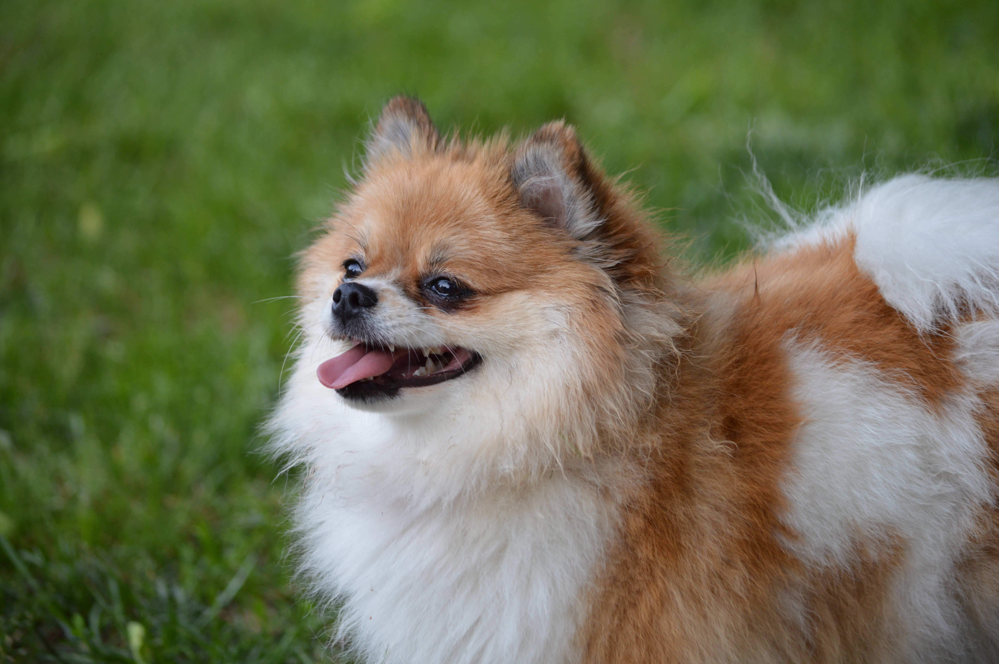

Dog breed
- My pet dog, Ddubu
- Dog breed
- Happy days
Pomeranian

The Pomeranian (often known as a Pom) is a breed of dog of the Spitz type that is named for the Pomerania region in north-west Poland and north-east Germany in Central Europe. Classed as a toy dog breed because of its small size, the Pomeranian is descended from larger Spitz-type dogs, specifically the German Spitz. It has been determined by the Federation Cynologique Internationale to be part of the German Spitz breed; and in many countries, they are known as the Zwergspitz ("Dwarf Spitz").
The breed has been made popular by a number of royal owners since the 18th century. Queen Victoria owned a particularly small Pomeranian and consequently, the smaller variety became universally popular. During Queen Victoria's lifetime alone, the size of the breed decreased by half. Overall, the Pomeranian is a sturdy, healthy dog. The most common health issues are luxating patella and tracheal collapse. More rarely, the breed can have Alopecia X, a skin condition colloquially known as "black skin disease". This is a genetic disease which causes the dog's skin to turn black and lose all or most of its hair.
As of 2017, in terms of registration figures, since at least 1998, the breed has ranked among the top fifty most popular breeds in the United States, and the current fashion for small dogs has increased their popularity worldwide.
Appearance
Pomeranians are small dogs weighing 1.36-3.17 kilograms (3.0-7.0 lb) and standing 8-14 inches (20-36 cm) high at the withers.They are compact but sturdy dogs with an abundant textured coat with a highly plumed tail set high and flat. The top coat forms a ruff of fur on the neck, which Poms are well known for, and they also have a fringe of feathery hair on the hindquarters.
The earliest examples of the breed were white or occasionally brown or black. Queen Victoria adopted a small red Pomeranian in 1888, which caused that color to become fashionable by the end of the 19th century. In modern times, the Pomeranian comes in the widest variety of colors of any dog breed, including white, black, brown, red, orange, cream, blue, sable, black and tan, brown and tan, spotted, brindle, and parti, plus combinations of those colors. The most common colors are orange, black, or cream/white.
The merle Pomeranian is a recent colour developed by breeders. It is a combination of a solid base colour with a lighter blue/grey patch which gives a mottled effect. The most common base colours for the effect are red/brown or black, although it can also appear with other colours. Combinations such as brindle merle or liver merle are not accepted in the breed standard. In addition, the eye, nose and paw pad are marshmallow color, changing parts of the eye to blue and the color on the nose and paw pads to become mottled pink and black.
Pomeranians have a thick double coat. While grooming is not difficult, breeders recommend that it be done daily to maintain the quality of the coat and because of its thickness and the constant shedding, with trimming every 1-2 months. The outer coat is long, straight, and harsh in texture while the undercoat is soft, thick and short. The coat knots and tangles easily, particularly when the undercoat is being shed, which happens twice a year.